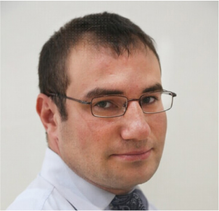
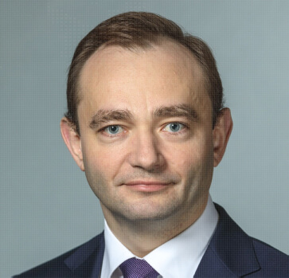

.jpeg)
Наиболее инновационная и быстро прогрессирующая организация как в спортивной, так и в IT-индустрии. Деятельность Федерации направлена на развитие и популяризацию спортивного программирования среди населения страны, организацию и проведение чемпионатов и соревнований, а также оказания содействия в подготовке тренеров и спортсменов. В контур данного вида спорта включены следующие уникальные дисциплины: алгоритмическое программирование, хакатон (продуктовое программирование), робо-программирование, бас-программирование, кибербезопасность.
Байсултанов Одес Председатель Правления ФСП, заместитель Министра спорта Российской Федерации. Действительный государственный советник Российской Федерации 1-го класса.
Аристов Станислав Исполнительный директор. Директор по развитию Проектного офиса по туризму Ассоциации межрегионального социально-экономического взаимодействия «Центральный Федеральный Округ»
Паршин Максим Президент ФСП, заместитель Министра цифрового развития, связи и массовых коммуникаций.
Наверх